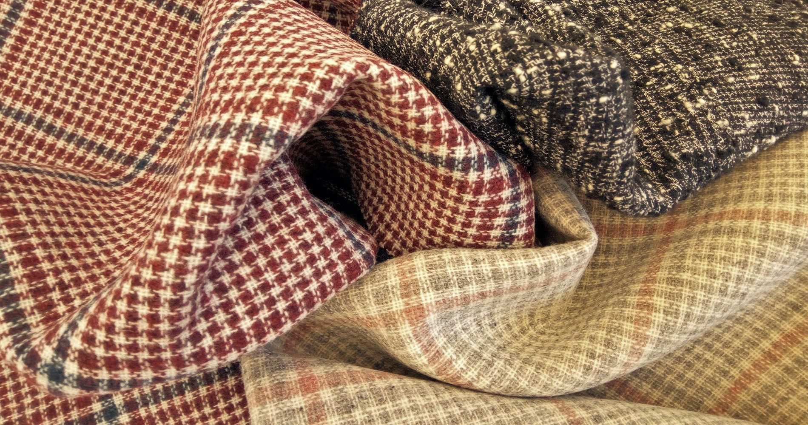
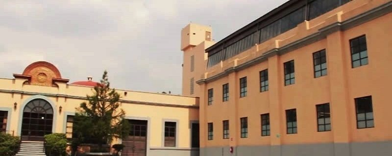
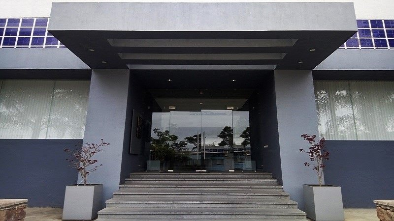
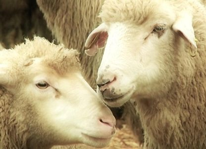
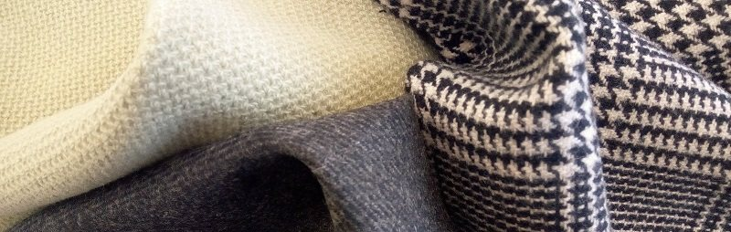

주요 수치
주요 수치
- San Ildefonso 조업 개시
- 1847
- 현 소유주 인수
- 1977
- 소유주 가족이 Novalan 설립
- 1983
- 양모·섬유 산업 업력
- 170+
- 생산 시설
- 100,000+ m²
연혁
당사의 연혁
멕시코 국내와 국제 양모·섬유 시장에서 쌓아 온 170년이 넘는 역사가 당사를 뒷받침합니다. 현재 당사는 아메리카 대륙 전체에서 가장 큰 울 원단 생산업체 중 하나라는 점을 자랑스럽게 생각합니다.
-
1847
San Ildefonso
San Ildefonso는 멕시코에서 가장 오래된 10개 기업 중 하나이자 아메리카 대륙에서 가장 오래된 섬유 기업입니다. 1847년에 조업을 시작했으며, 처음에는 멕시코 시장의 남성 정장 원단 수요를 충족하기 위해 울 원단과 폴리에스터·울 혼방 원단을 생산했습니다.

San Ildefonso Fábrica de Tejidos de Lana, S.A. de C.V. -
1977
새로운 소유주
San Ildefonso는 1977년에 현 소유주에게 인수되었습니다.
-
1983
Novalan
Novalan은 1983년 소유주 가족이 지속 가능성을 온전히 지향하며 설립한 회사로, 초기에는 재생 울을 사용한 원단 제조에 집중했습니다. 이후 사업이 발전하면서 소모 제품과 방모 제품으로 라인을 확대했습니다.

Novalan, S.A. de C.V. · Tulancingo, Hidalgo -
오늘
San Ildefonso와 Novalan
새로운 투자와 강력한 리더십 팀, 그리고 국제 기준에 따라 최고의 품질로 생산하는 데 깊이 헌신하는 임직원의 노력 덕분에, 울 코트, 플란넬, 캐주얼 및 스포츠 재킷, 여름용 고급 원단, 그리고 캐시미어와 실크 혼방 등의 제품으로 영역을 넓혔습니다.
또한 Novalan은 산업용 섬유, 당구대 천, 실내외 인테리어 원단, 그리고 매우 다양한 원사를 생산합니다.
현재 아메리카 대륙에서 최고급 울 원단을 생산합니다.
생산
수직 계열화
San Ildefonso와 Novalan은 수직 계열화된 기업으로, 이를 통해 생산 공정 전반을 완전히 관리하고 높은 유연성을 유지하며 시장의 요구에 신속하게 대응할 수 있습니다.
당사의 생산 시설은 100,000 m²가 넘습니다.
당사는 폭넓은 경험을 갖추고 있으며, 원료의 신중한 선별에서 완제품에 이르기까지 생산 공정 전반에 걸쳐 개선하고 혁신하여 높은 품질 수준에 도달하기 위해 끊임없이 노력하고 있습니다.


영상
회사 소개 영상
영상은 재생할 때에만 YouTube에서 불러옵니다.
섹션
사이트의 섹션


연락처
Novalan, S.A. de C.V.
주소
Carr. Tulancingo-Huapalcalco #1510Col. Caltengo
Tulancingo, Hidalgo. México
C.P.: 43626